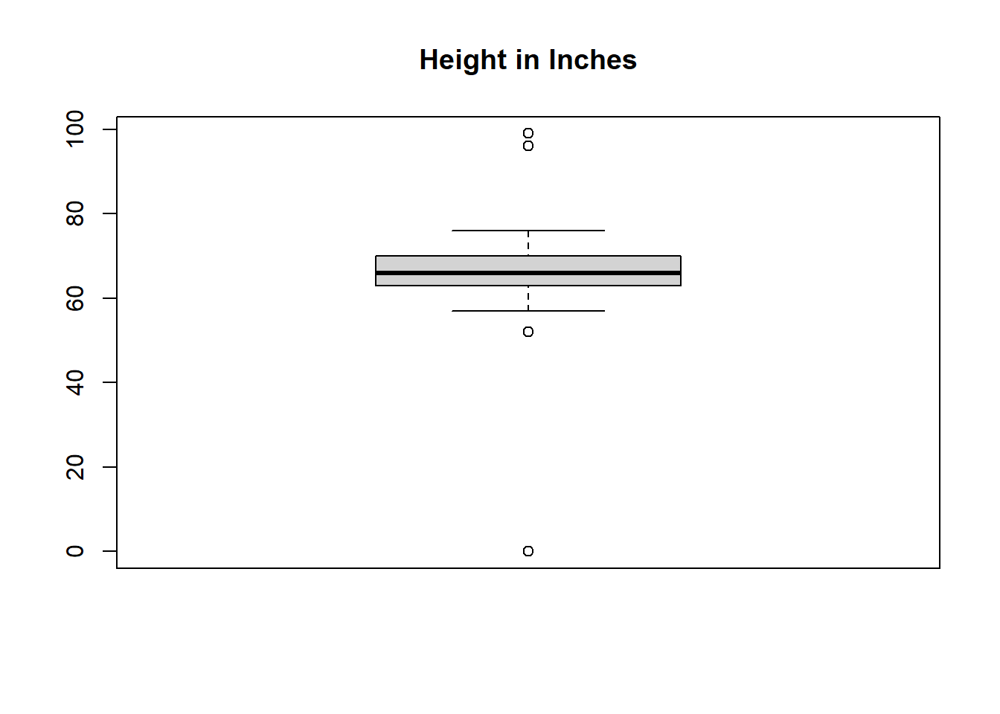

1.3 Explain
1.3.1 WHAT ARE DATA
Data are defined as “facts and statistics collected together for reference or analysis.”1 As seen in Figure 1.1, there are two types of data: quantitative and qualitative. Quantitative data are able to be expressed in numerical format and are countable. These data are either discrete or continuous where discrete data uses numeric bins. For example, we use our age as discrete quantitative data, we round our age to the previous year (eg., 20, 21, 22). Continuous data does not use bins, but rather includes all of the fractions between two whole numbers. An example could be most physical measures like height, weight, the speed at which an individual runs.
Qualitative data describe characteristics or categories and can be broken down into two categories, nominal or ordinal. Nominal data have no inherent ordering but it can be categorized. Examples include country or origin, gender, hair color, race, etc. Ordinal data can both be categorized and ordered (e.g., first, second, and third place is a race).
Going back to our hypothesis of male height on campus, heights are continuous, qualitative data. It is difficult for people to report their specific height and you assume that most individuals will report it rounded to the closest inch. This makes the data you will actually use, discrete quantitative data.
Fun fact: A single data point is called a datum which is Latin for “something given”. The word data can be either singular or plural depending on how you use it. It can be used as a mass noun the same way we discuss sand on a beach or hair on our head. However, in science we are usually referring to multiple datums within a data set making it a plural noun. Therefore, data is cool and data are cool!
— Sources
1.3.2 COLLECTING DATA
The first step to answering a research question is to collect your data. Broadly, data comes in two forms, primary and secondary. (Fig 1.2) Primary data are data that is collected directly by the researcher. Surveys, observations, experimentation, questionnaires, and interviews are all examples of primary data. Secondary data are collected from published or unpublished literature. It is collected by different researchers and compiled for use by a second scientist. These types of data include data found in published articles, books, journals, biographies, and government records like the US Census.
Once compiled, you now have a data set which is composed of observations and variables. An observation is all of the measures taken for one person or item. A variable is what is being measured.
The US CDC data is secondary, but you are collecting height data yourself in class as a comparison. The survey or questionnaire you use on your classmates is primary data. Each individual is an observation and the variable of interest is height.
1.3.2.1 “HOW do we get data??”
The first step to answering a research question is to collect your data. Broadly, data comes in two forms, primary and secondary. (Fig 1.2) Primary data are data that is collected directly by the researcher. Surveys, observations, experimentation, questionnaires, and interviews are all examples of primary data. Secondary data are collected from published or unpublished literature. It is collected by different researchers and compiled for use by a second scientist. These type of data include data found in published articles, books, journals, biographies, and government records like the US Census. Once compiled, you now have a data set which is comprised of observations and variables. An observation is all of the measures taken for one person or item. A variable is what is being measured. The US CDC data is secondary, but you are collecting height data yourself in class as a comparison. The survey or questionnaire you use on your classmates is primary data. Each individual is an observation and the variable of interest is height.
1.3.2.2 TYPES OF DATA
There are a lot of different ways to record observations. Its important to choose an appropriate format to record your data. Some pretty broad categories are:
- Yes/No
- Tallies
- Categorization
- Measurments
- Open-ended text
If you were to ask your friend: “What is your favorite food?” You would not expect them to give an answer of “yes” or “no”. Asking an open-ended question often/always prompts an open-ended response. This can be informative and inclusive, allowing respondents to answer with exactly the answer they feel best answers the question. However, it can make analyzing and drawing interpretations from the data dificult to impossible!
If instead, we ask “Is your favorite food pizza?” We expect a yes/no answer. Asking this question of 100 people, we can easily answer the question “What percentage of people’s favorite food is pizza?”
1.3.3 POPULATIONS AND SAMPLING
Random Sampling: It is a sampling method in which all the items have an equal chance of being selected and the individuals who are selected are just like the ones who are not selected
Stratified Random Sampling: It is a process to gather data by separating the actual population into the distinct subset or strata, and then choosing simple random samples from each stratum Your research question is about the height of all males at your college but recording height data for each individual would be very difficult and time consuming. You instead decide to use a sample of males in your data science class. This is a random sample as each male individual has an equally likely chance of being samples (that is, unless a prerequisite exists).
Sampling strategy can lead to bias. Statistical bias is a systematic tendency which causes differences between results and facts. If instead of your classmates, you had chosen a different sample, like the men’s basketball team, your results would have been biased as basketball players are taller on average.
1.3.3.2 How to draw samples
Random Sampling: It is a sampling method in which all the items have an equal chance of being selected and the individuals who are selected are just like the ones who are not selected Stratified Random Sampling: It is a process to gather data by separating the actual population into the distinct subset or strata, and then choosing simple random samples from each stratum Your research question is about the height of all males at your college but recording height data for each individual would be very difficult and time consuming. You instead decide to use a sample of males in your data science class. This is a random sample as each male individual has an equally likely chance of being samples (that is, unless a prerequisite exists). Sampling strategy can lead to bias. Statistical bias is a systematic tendency which causes differences between results and facts. If instead of your classmates, you had chosen a different sample, like the men’s basketball team, your results would have been biased as basketball players are taller on average.
1.3.4 Study Design Considerantions - Bias
is there bias in the sampling? is there bias in the data types collected?
If so, Be explicit Our classroom represents a subset of individuals in this country: college aged attending college specific geography specific time period
we group categories a,b,c to make new groups for analysis.
In doing so, we limit our interpreations to _____
1.3.5 EXPLORATORY DATA ANALYSIS
The first step in understanding and interpreting our data is called an exploratory data analysis. We will use a few measurements to quickly look at the data and then we can use some simple graphing techniques to turn our data into visualizations. The first three M’s, you are likely familiar with and are often referred to as measures of central tendency: Mean, Median, and Mode. These go along with range, outliers and sample size.
- Mean
- Median
- Mode
- Outlier
- Range
What is a statistic?
1.3.6 Exploring height
If you do not have class data on height, we will be using the following simple dataset of 5 individuals:
- Can you describe what is happening in the following
codechunk?? - What do
person, heightrepresent in relationship toex_height??
Click to show answer
We create the R object
ex_heightusing the assignment operator<-ex_heightis a data.frame, a table, with two columns:personandheight
person, heightare the two columns, or variables, ofex_height
| person | height |
|---|---|
| Ind_a | 5.50 |
| Ind_b | 5.00 |
| Ind_c | 6.00 |
| Ind_d | 5.25 |
| Ind_e | 5.00 |
1.3.7 Mean height
You probably already know this one. The (arithmatic) mean is calculated by adding all values together, and dividing by the number of observations. For our dataset, we add all 5 heights together and divide by the number of individuals (5):
\(\frac{(5.5 + 5 + 6 + 5.25 + 5)}{5}\)
\(\frac{26.75}{5}\)
\(5.35\)
In R, we can write this out “by hand.” Since R is a statistical programming language, r recognizes basic mathematical expressions. We can code the following to calcualte the mean:
## [1] 5.35Since R is an object-oriented programming language, we don’t need to write out individual numbers for each calculation. Instead, we can refer to the ex_height object. Since ex_height is a data.frame, we can refer to it variables by name with the $ operator. We also take advantage of some of the built-in mathematical functions of R: sum(), length()
## [1] 5.351.3.8 Median height
The median is calculated by ordering all values from small to large. If there are an odd numberof values, there will be a single value at the middle.
Our original data:
5.5, 5, 6, 5.25, 5
Our data re-ordered from small to large, then we simply cross off values from either end to find the middle value:
5, 5, 5.25, 5.5, 6
5, 5, 5.25, 5.5, 6
5, 5, 5.25, 5.5, 6
If we had an even number of values, we would wind up with two “middle values”, in which case we take the mean of these two.
If we had one more value, let’s say 5.75, we wind up with both 5.25 and 5.5 as middle values.
5, 5, 5.25, 5.5, 5.75, 6
5, 5, 5.25, 5.5, 5.75, 6
5, 5, 5.25, 5.5, 5.75, 6
The median is the mean of these two values:
\(\frac{5.25+5.5}{2}\)
\(5.375\)
In a small dataset, it’s easy to pick out the middle value. Fortunately, there’s an R function for this as well:
## [1] 5.25## [1] 5.375Did you notice the
c()function above? What does it do?
1.3.9 Modal height
The mode is the most common value in the dataset. Here again, it’s easy to pick out there are 2 people with a height of 5, and all other values are represented by just one person. There’s actually no build-in R function to calculate the mode…
But don’t worry, there are functions that let you decide the mode and more!! A very useful function is table(), used to make counts of values. In a small dataset, we see that two individuals have a height of 5. Our mode is 5!
##
## 5 5.25 5.5 6
## 2 1 1 11.3.10 Range
The range of the data is two numbers, the lowest, and highest values within the data:
## [1] 5 6Though, if you want just the minimum or maximum value, you can use min() or max():
## [1] 5## [1] 61.3.11 Outliers
So far, some of these examples may have so obvious you may be thinking: what’s the point??
For a slightly more practical demonstration, try out the above functions on your class_data. You can also access our heights and weights dataset is included in the accompanying ipumsED R package.
There are a few ways to actually get your data into R, depending on the file type your data is saved as. If it is a .csv, you can use the base-R function read.csv(). If you have data in an Excel file (.xls, .xlsx) you will need install the readxl R package in order to use the add-on function of read.xlsx().
Notice the simliarity between
read.csv()andread.xlsx()??While packages are created by the R community, they often try to maintain syntanx/coding conventions from base R.
We can inspect our data object with some basic functions. Notice how the output differs when the function is called on a data.frame versus when it is called on a vector.
## [1] "data.frame"## AGE SEX HEIGHT WEIGHT
## Min. : 0.00 Min. :1.000 Min. : 0.00 Min. : 0.0
## 1st Qu.: 29.00 1st Qu.:1.000 1st Qu.:63.00 1st Qu.:136.0
## Median : 49.00 Median :2.000 Median :66.00 Median :170.0
## Mean : 47.56 Mean :1.517 Mean :62.84 Mean :216.4
## 3rd Qu.: 66.00 3rd Qu.:2.000 3rd Qu.:70.00 3rd Qu.:205.0
## Max. :997.00 Max. :2.000 Max. :99.00 Max. :999.0## [1] "integer"## Min. 1st Qu. Median Mean 3rd Qu. Max.
## 0.00 63.00 66.00 62.84 70.00 99.00Calling the R object itself usually prints the contents. For something this big, that’s probably inadvisable, so we print just the first 10 records using the head() function.
There’s also a
tail()function for printing the last 10 recods
## AGE SEX HEIGHT WEIGHT
## 1 18 1 68 130
## 2 28 1 72 275
## 3 3 2 0 0
## 4 32 2 68 174
## 5 44 1 71 180
## 6 5 2 0 01.3.12 Find Outliers
1000 records is probably too much to review manually (and who would want to!?). Instead, we can visualize our data as one method to detect outliers. a box-and-whisker plot or boxplot is a common graph to plot continuous data like height.
Box-and-whisker plots, by default, show you which values are outliers! The box represents the middle 75% of the dataset. The whiskers account for another 11% on either end of the box. The median is represented by a thick black line. Any observations outside the whiskers are considered outliers

In this case, the values of 0, 95,96,97,98,99 all represent special coded values. 0 Indicates someone Not In Universe - someone for whom this question wasn’t asked. This may be an infant too young to meaningfully be measured. In this case higher values represent a value of unknown for various reasons. Both of these values represent missing data, but they mean different things.
Why do you think we have more than one value to represent missing data? How does a value of 0 compare to a value of 99??
We may want to exclude these special cases from our analysis. We can easily perform a data modification by filtering out values that equal any of our special cases. You can see the range of the graph is smaller, though visually, the box and whiskers are larger. Do we still see outliers in height?